Linux Lite Installation Guide
|
|
Preparing your Computer for the Installation
Installing Linux Lite to your computer
Encrypting your home folder
Setting your Language
Enabling TRIM on your SSD
Mounting drives & partitions
Adding another User
User permissions
Removing a User
Resetting your password
Terminal Basics
Themes & Icon sets
Changing mouse pointer size
To install Linux Lite you will need to download the ISO file, then create either a bootable CD/DVD or USB stick from the ISO. To create a bootable CD/DVD, you need to burn the ISO as an "image" to the CD/DVD. Below are listed three free Windows programs that will enable you to do that. If burning to a USB stick, we have also listed a free program that we recommend for doing that in Windows; or a reliable method to create a bootable USB when using a Linux system, or OSX.
Once you have your bootable media created, you may need to access your computer's BIOS settings to set the boot order for booting CD/DVD/USB's first (before the hard drive). Typically there will be one or two special keys that can be pressed during initial power-up of the computer (before an operating system starts booting) that will allow you access to either the BIOS Settings/Startup Menu or a separate Boot Menu. Specific keys vary from one manufacturer to the next, so refer to your user manual if you are not sure how to access the settings.
Writing the latest Linux Lite ISO to a CD on Windows
Here is some free DVD burning software for you to select from:
BurnAware Free - http://www.burnaware.com
CDBurnerXP - http://cdburnerxp.se/
ImgBurn - http://www.imgburn.com/
Place a blank DVD in your DVD drive, open up the program, select the iso file that you want to burn. Choose the lowest burn speed, this will greatly reduce the risk of your burn becoming corrupt as can sometimes happen. A 4x speed is recommended if you have it.
Writing the latest Linux Lite ISO to USB on
Windows
Win32DiskImager
Win32DiskImager allows you to create a bootable
Live USB drive. Download it from here -
Win32DiskImager.
Writing the latest Linux Lite ISO to USB using a terminal in
Linux and OSX
To find out the letter of your USB stick, open a terminal and
type: df -h It is usually
listed as 'media' or similar.
Be very careful to make sure you choose the right drive letter, as
you can see in the Filesystem column, my device is sdb
another clue is the value in the Size column, here it is
shown as 15G. In this example my device is an Apacer
15gb USB stick.

Open a folder and make sure you are in the directory that the iso
file is in. Open a terminal in that directory and type the following:
| sudo dd if=linux-lite-2.0-beta-32bit.iso of=/dev/sdx bs=4M for 64bit: sudo dd if=linux-lite-2.0-beta-64bit.iso of=/dev/sdx bs=4M |
Change the 'x' in 'sdx' to match the letter of your USB device.
The Live DVD/USB image will boot into the desktop automatically, there is no need to login manually.
No USB Boot option in the Bios? Use PloP
Full instructions are here -
http://www.howtogeek.com/howto/16822/boot-from-a-usb-drive-even-if-your-bios-wont-let-you/
Preparing your Computer for the Installation
If you are planning to have Linux Lite as the sole operating system on your computer, there is nothing special you need to do in preparation for the installation - even if another operating system is currently occupying the hard drive. Simply boot up your live installation disk, give Linux Lite a test run if you'd like, then start the installation by double-clicking the "Install" icon on the desktop. When you get to the "Installation Type" screen, tell the installer to use the whole disk and it will go ahead and erase anything that is already there, create the partitions needed, format them and install the system automatically.
If you currently have one physical hard drive and want to dual-boot Windows and Linux Lite, then you should do a few things to prepare for the installation to insure the best results.
|
If you have more than one physical hard drives and want to dual-boot Windows and Linux Lite, with Linux on its own dedicated physical drive, then we recommend you make a request for guidance in our forum if you are unfamiliar with Linux installations. Otherwise, general instructions for such an installation are listed below.
|
Installing Linux Lite to
your computer
Start your computer, and go into your system Bios and check that the
boot order is set so that DVD and USB devices are set to boot first.
This varies from bios to bios. Refer to your motherboard documentation
for more information.
Once you are happy with your bios set up, insert the DVD disc or USB
stick into your computer and reboot your computer. You'll be greeted
with the following screen. Let the timer run down if you want to boot
to the Live session.
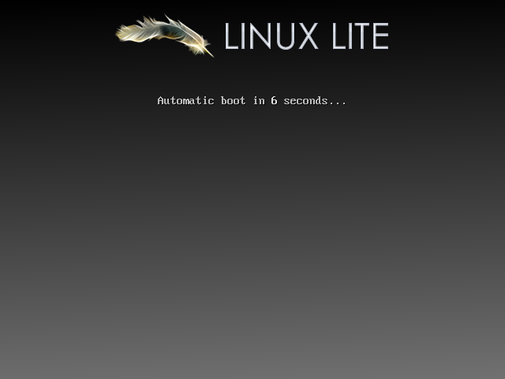
Press any key to see the next screen.

Make sure Start Linux Lite is highlighted, press the enter key to boot the Live session. This is also a good way to check that all of your hardware is supported. If you are having trouble booting and you get just a black screen, try the second option, Start Linux Lite in safe graphics mode.
The other options are:
Run memtest - Test your computer memory for faults.
Boot the first hard disk - boot the existing operating
system.
NOTE: If you are having any trouble booting Linux Lite after
installation, please read through
this
trouble shooting guide.
The computer will go through the boot up process, this may take
anywhere from a few seconds to a couple of minutes depending on your
hardware. The login for the Live user is automatic, there is no need
to login. An explanation of the various Menu's can be found by
clicking here.
Before we proceed, make sure you have an internet connection first. Click here if you need help to get online before you install Linux Lite.
Once you've had a look around Linux Lite and are ready to install the first step is to double click on the Install Linux Lite icon on your Desktop.
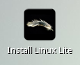
The installer will then open on the desktop and display the Welcome section of the installer. From here you will select your preferred language and view release notes for this version of Linux Lite.
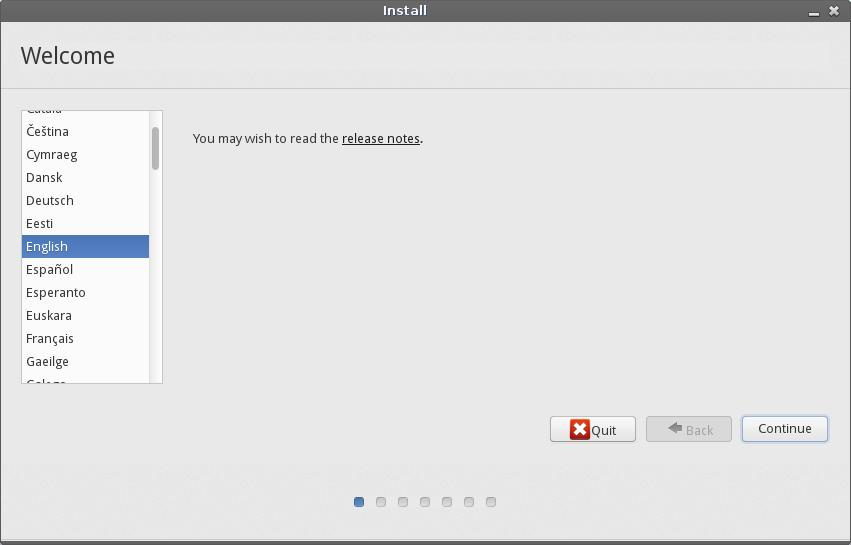
After selecting continue, you are presented with some requirements for the installation. Ensure that these requirements are met by viewing a check mark beside them. You may also choose to download any available updates while installing or install third-party software during the installation. NOTE: Please verify the legal status of the use of the third party software in your country/territory.
NOTE: Generally we don't recommend ticking Download updates while installing and Install the third-party software as this will significantly slow down the install process. Updating after a fresh install is recommended and will save you time in the long run. A typical install on today's hardware will take around 10-15 minutes. If you check these 2 boxes, the install could take over an hour or longer.

Now it is time to choose the method of installing Linux Lite to your hard disk. You will have several options during this phase of the installer.
Install Linux alongside them - otherwise known as a dual boot. An option to boot from Windows or Linux Lite when your computer starts.
Note: If you DO have Windows on the computer, but are not offered the option to install "Alongside Windows", see the trouble shooting guide.
Note: If you want to encrypt your home folder, do not select the option 'Encrypt the new Linux installation for security' instead, please follow these instructions here.
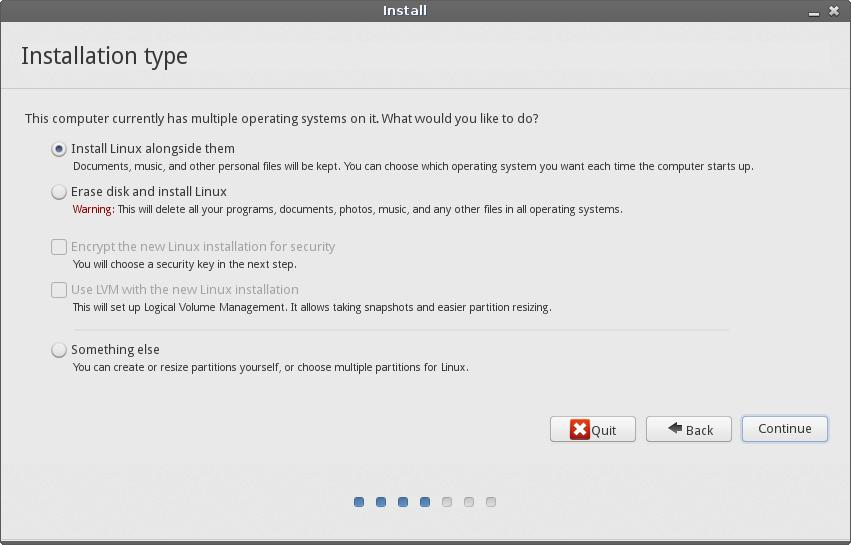
Erase Disk and Install Linux
Upon selecting Erase Disk and Install Linux you are presented with a screen displaying how your install will be represented on the hard disk. This is the most simple option available and will show your hard disk being completely and solely occupied by Linux Lite. You may select the disk you wish to install Linux Lite to from the menu labeled: Select Drive. You may then select Install Now when you are ready to begin installing.
(NOTE: This installation option will automatically install the Linux bootloader to the first hard drive on the system. That is typically how most people install and the Linux boot loader offers the choice of booting any other operating systems that are on your computer. However, if your intent is to keep the Windows boot loader in charge of booting the Windows drive and the Windows drive is the first one, then you need to use the "Something else" installation type. That way you can control the "location for boot loader installation" and set it for the specific drive you choose for Linux Lite. Again, this is not a necessity when dual-booting. We point this out only because some people prefer to keep the Windows drive as is.)
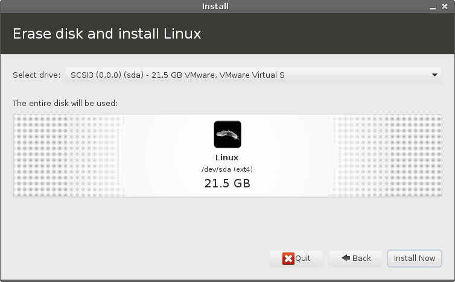
Install Linux alongside Windows (dual booting)
If you have selected to install Linux Lite alongside an existing
copy of Windows, you will be greeted with a screen representing the
two operating systems on the disk. You may choose the disk to install
Linux Lite to from the top menu labeled: Select Drive. In the main
part of the window you will see your hard disk split into two
sections, one containing your Windows install and one for your
proposed Linux Lite installation. You may drag the empty space between
them to allocate space from one to the other as needed. You may then
select Install Now after you have made the desired changes.
If your computer has more than one physical hard drive and your intent
is to install Linux to a separate drive from the Windows drive, see
this section.
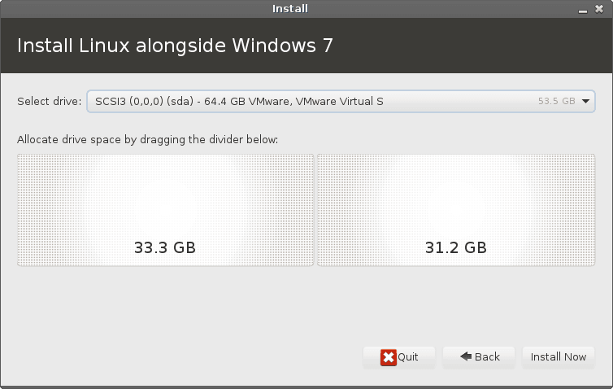
Something Else
NOTE: FOR ADVANCED USERS ONLY
If the other methods do not fulfill your personal requirements for installation you may select Something Else and manually partition your hard disk. There are many options available from this screen. All of your disks will be visible in a hierarchal tree view in the main window. From here you can see disk devices, existing partitions, and unallocated space. If your disk is new or you are creating a new install in a virtual machine you may need to select New Partition Table from the options below. This will erase the disk and provide you with a clean slate. WARNING: This will destroy any data on the disk selected! Another option is to add a partition to the disk by selecting Add from the button options. This option requires that there exists free space on the disk with which to create the partition. When adding a partition, you may select the place on the disk to create the partition, the partition size, the filesystem type, and the point in the filesystem that this partition will be mounted. If you need to modify these attributes of a partition, you may select Change from the button options. If there exists partitions that you wish to be rid of, you can select Delete from the button options to delete the partition. If you wish to return everything back to its original state you may use the Revert button. NOTE: This will only work if you have not written changes to the disk.
Under the partitioner there is a menu for selecting the location of the boot loader's installation. You may select a drive's MBR, indicated by the device name e.g. /dev/sda, or you may select a partition to install the boot loader to. The safest option is to install the bootloader to the MBR of the first disk as the bootloader will intelligently add entries for installations of Windows and other Linux installs.
NOTE: If you have any NTFS drives, it is important to give these a mount point during the install. That way they will be easily accessible after the installation. The mount point is simply "where" in the file system you want that partition's files to show up. If you want them to show up in your home directory, then give it a mount point like: /home/username/NTFS_Files. Substitute your actual username (in all lowercase letters) for "username". You can name the mount point what ever you want, so you don't have to use "NTFS_Files" if you have a more descriptive name in mind. Try not to have any spaces in the mount point name. Use an underscore (_) character in place of spaces.

After completing the partitioning phase of the installation, you are prompted to set up some personal details about the system. The installer will continue to work in the background while you are filling out this information. The first step is to select your time zone. The installer may detect your time zone based on your location via your ISP's information. If not, you may select your time zone by either clicking on your region on the supplied map or by typing in your area in the box below.

The next step is to select your keyboard language and layout. You may select the language that your keyboard corresponds to on the left and any specialized layout on the right. This is the point where you may select to enable international keys on your keyboard. Though, these options may be changed later.
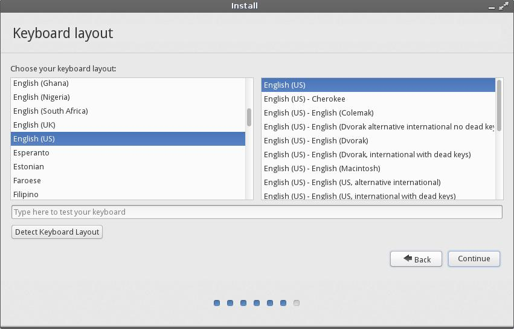
On the next screen, you are greeted by several forms to fill. These forms include:
Your name - your personal name.
Your computer's name - the name that you wish to use to
identify the computer on your network.
Pick a username - your user name that is used to login to the
system.
Choose a password - your password that you wish to use for
your user and sudo password.
Confirm your password - enter the above password again.
NOTE: Choose a strong password, a mix of upper and lower case
as well as a mix of numbers and characters. An example of this would
be: y%9L2x#o would be considered a
strong password. Use a program like Keepassx to keep all your
passwords safely stored and NEVER use the same password for different
websites.
(Keepassx is available for installation from Menu, System,
Install/Remove Software.
You do not need to download it from their website.)
Never compromise your security for convenience.
There are also options to enable auto-login for your user or have the computer prompt you for a password everytime you login.
Note: If you want to encrypt your home folder, do not select the option 'Encrypt my home folder' instead, please follow these instructions here.

If you have a webcam, you may encounter a screen during the install asking to 'Take a photo' this feature is supported so that when you first log in, your photo will be displayed as your avatar. If you skip this step, you can use a .png photo of yourself, rename it to .face and place it in your /home/user folder.
After finishing all of these steps you will be greeted with a
slideshow detailing all of the features and software that are included
in this version of Linux Lite. You may allow them to play on their own
or navigate through them using the arrow buttons on the sides of the
window.
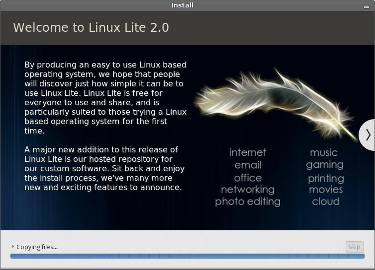
Once the installation is complete you will be prompted to either restart your computer and begin using your newly installed Linux Lite system or to continue using the testing environment on the DVD/USB that you are using. If for some reason your computer hangs on restart, press F4.
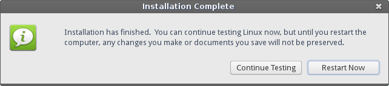
After a reboot you will be greeted by the login screen:

After you have logged in you will see the desktop. Congratulations! Now that we've installed Linux Lite, lets take a look at what's available on the Menu by clicking here.
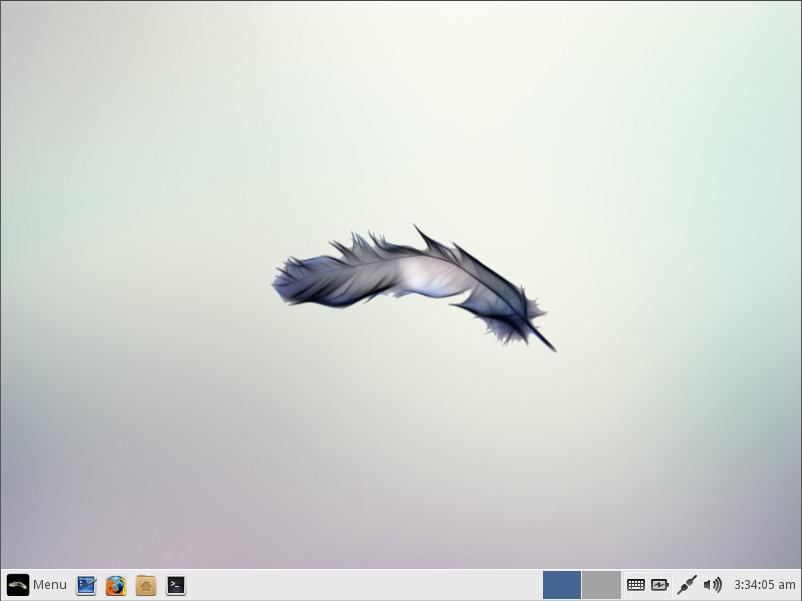
After a new installation of Linux Lite, you have the option of encrypting your home folder for added security. You won't be able to encrypt your home folder while you are logged in. So we're going to add a temporary user then when we are finished, we'll delete that user.
1. Click on Menu, Settings, User Manager. Click on New User and add the user tempuser with a password of your choosing. Make sure you tick the sudo box on the right and click on Apply before closing out User Manager.
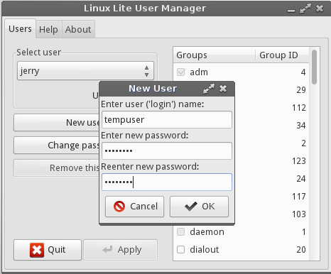
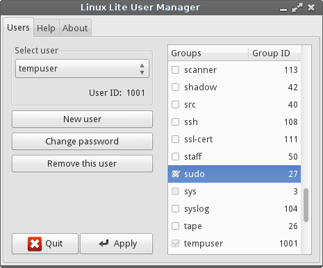
2. Now logout, and login with the user tempuser.
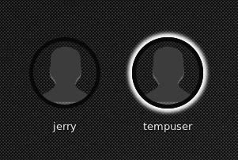
3. Open a terminal and enter the following command to encrypt your home directory, replacing user with the name of your user account:
sudo ecryptfs-migrate-home -u user
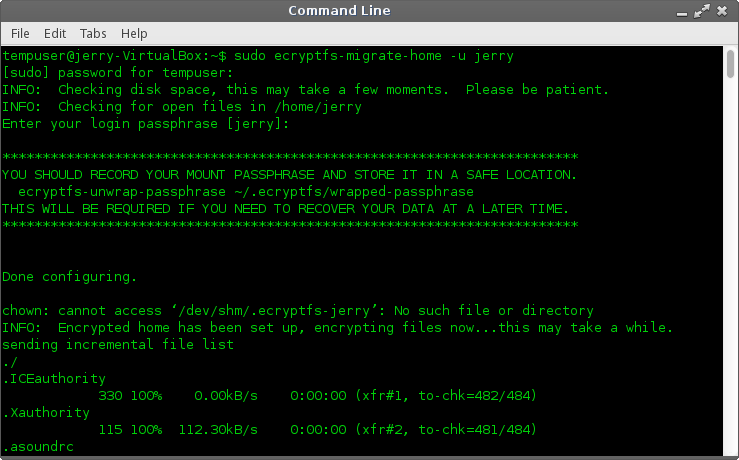
4. When this has finished (time to encrypt may vary) you must logout of tempuser and login as your user. DO NOT reboot.
5. Once logged in as your user, open a terminal and type in:
ecryptfs-add-paraphrase
and enter your login password.
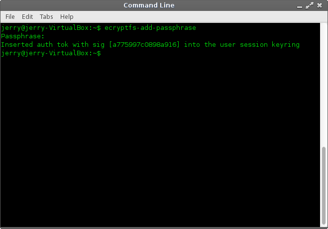
6. To check that you have successfully created a passphrase, enter the command:
ecryptfs-unwrap-paraphrase
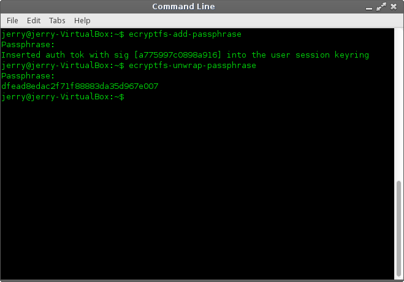
7. Clean up time. Open a terminal and enter the following commands:
sudo userdel tempuser
sudo rm -rf /home/tempuser/
sudo rm -rf /home/yourusername.3redf/
When you do the last command, type a dot '.' after your username and press the tab key to complete the directory name.
Note: Be extremely careful when doing this last command, you run the risk of deleting your home folder if you do not follow these instructions to the letter.
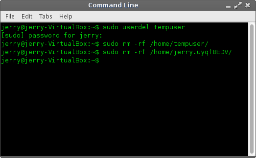
Your home folder should now be encrypted. To test, insert a live linux operating system cd/usb and reboot. Once you are in the live desktop, you shouldn't be able to browse your encrypted home folder.
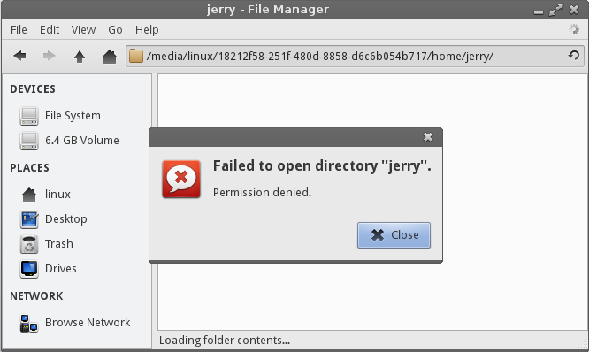
Here's how to set a language system wide following an install of Linux Lite. If you selected a language during the install, skip steps 4, 5 and 7.
1. Click on Menu, Settings, Language Support.
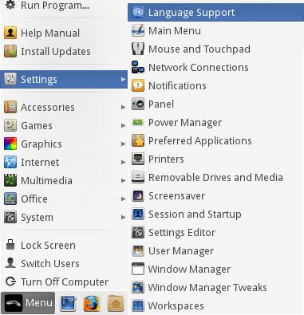
2. You will get a dialog box pop up, click on Install.
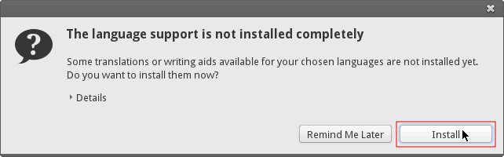
3. You will then be prompted for your password, enter it to continue.
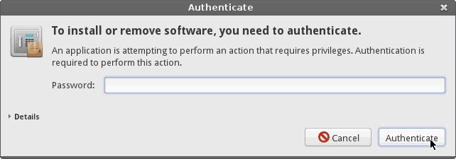
4. Now click on the button Install / Remove Languages.
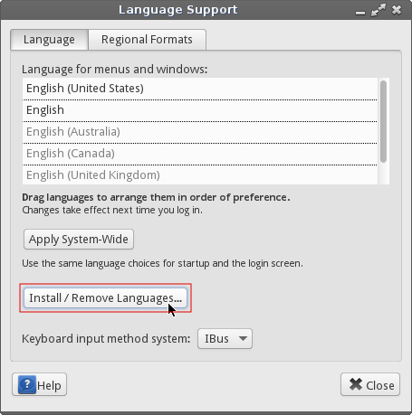
5. In this example, we'll install the Portuguese language. Scroll down, find your language and tick the box next to it, then click on Apply Changes.
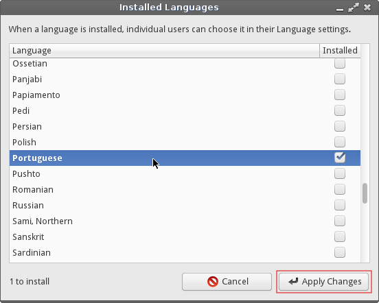
Your computer will begin to download all the language files, this may take a while.
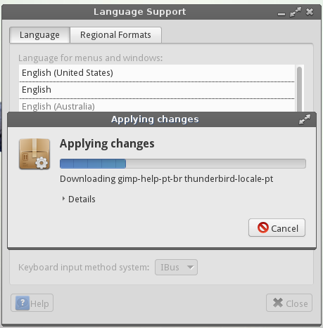
6. Once that is done, scroll to the bottom of the Language for menus and windows box and drag your newly installed language to the top of the list. Then click on Apply System-Wide, you'll be prompted for your password again.
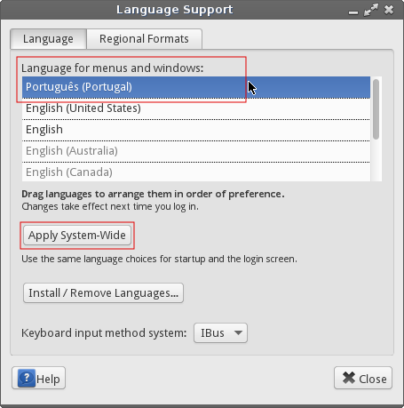
7. Now click on the Regional Formats tab, select the language you just installed, and click on Apply System-Wide.
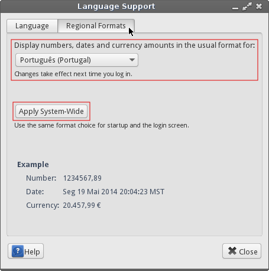
8. Now logout and login again and you will see that your new language has been applied.
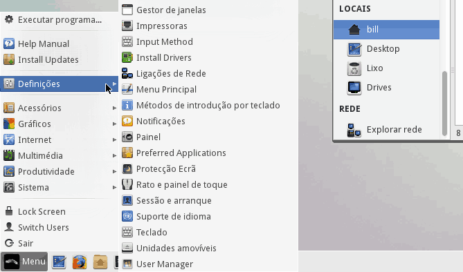
Please note that not all programs may not have your language applied. If this is the case, search for that program in Install/Remove Software and see if there is a language pack available for it. Also note that after you have changed your language, some of the Menu items may not be translated properly. There is little we can do about this, an easy way to rename Menu entries is by going to Menu, Settings, Main Menu and editing the entries there.
Enabling trim on your SSD will significantly increase its life span. Here's how to do it on Linux Lite.
CAUTION: You MUST edit the following file with great care, a misplaced comma, a gap that shouldn't be there or a missing line will cause you computer to not boot. Take your time and triple check this file for accuracy before saving it.
Open a terminal and do:
sudo cp /etc/fstab /etc/fstab_bak-notrim
When that has finished, in the same terminal do:
sudo leafpad /etc/fstab
a file will open that will look similar to this:
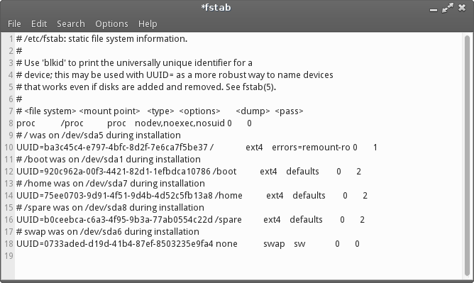
Look for every line that contains the word ext4
At the start on the next block of information, place the
characters discard, (don't forget the comma)in
front like in the picture below:
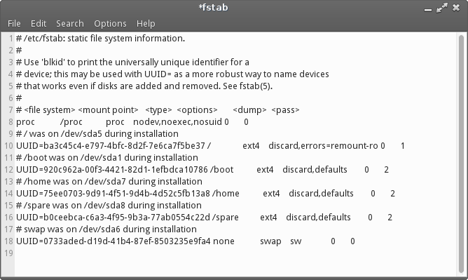
Now save and close the file. At this point you must restart your computer.
After your computer has rebooted, in a terminal do:
wget -O /tmp/test_trim.sh "http://www.linuxliteos.com/files/test_trim.sh"
when that file has downloaded, in the same terminal do:
chmod +x /tmp/test_trim.sh
Now we are ready to test if we have TRIM enabled. In the same terminal do:
sudo /tmp/test_trim.sh tempfile 50 /dev/sda
Wait for it to finish, your terminal should look something like this:
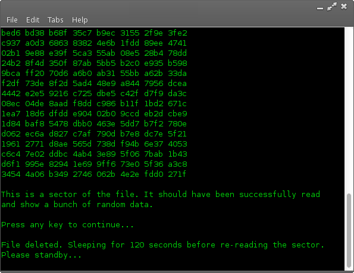
Hit any key to continue and wait 2 minutes for the test to restart.
If TRIM has been enabled properly, your terminal should now look like this:
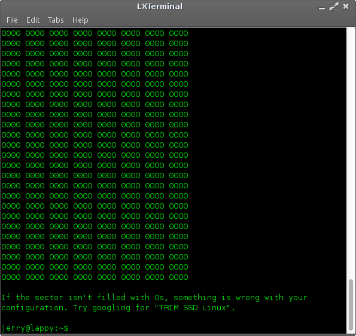
If for some reason it doesn't, restart this tutorial again carefully following each step to the letter.
If there are partitions on your drive(s) that you did not set-up
access for during the installation process, you can do that afterwards
by following the instructions in this section. The basic procedure
includes finding out the UUID for your partition, making a mount point
for it in the file system and creating an entry in the /etc/fstab file
for auto-mounting it on every boot-up. A 'mount point' is simply
'where' in the file system you want the partition's files to show up.
Most people like to see them in their Home folder, so that is what the
following examples depict.
NTFS
First we need to make a mount point in your home folder. This is
where you will access those files.
In your home folder, right click and make a new folder, in this
example we'll call it 'ntfsfiles'. Now onto the next
step.
Open a terminal and type: sudo blkid
followed by your password. This will output the uuid's for all your
hard drives.
Take the uuid for that drive and place it into /etc/fstab, first we
will back up the fstab file:
sudo cp /etc/fstab /etc/fstab.bak
In the terminal still, type in: sudo leafpad /etc/fstab
A text file will open up. Lets say the uuid for our new ntfs drive
is - 0463741f-a838-40c8-b40f-3dbb7f988e29. We would
enter this into our fstab as:
UUID=0463741f-a838-40c8-b40f-3dbb7f988e29
/home/user/ntfsfiles ntfs defaults,umask=007,uid=1000,gid=1000 0 0
You can put the above line anywhere in the fstab file.
Make sure you leave a blank line at the bottom of the fstab file
before you save the file.

Substitute your username (in all lowercase letters) where
"user" is shown in the above example. Save the file.
Open a terminal and type: sudo mount -a
If all went to plan, in /home/user/ntfsfiles you
should see all your files.
First we need to make a mount point in your home folder. This is
where you will access those files.
In your home folder, right click and make a new folder, in this
example we'll call it 'ext4files'. Now onto the next
step.
Open a terminal and type: sudo blkid
followed by your password. This will output the uuid's for all your
hard drives.
Take the uuid for that drive and place it into /etc/fstab, first we
will back up the fstab file:
sudo cp /etc/fstab /etc/fstab.bak
In the terminal still, type in: sudo leafpad /etc/fstab
A text file will open up. Lets say the uuid for our new ext4 drive
is - 0463741f-a838-40c8-b40f-3dbb7f988e29. We would
enter this into our fstab as:
UUID=0463741f-a838-40c8-b40f-3dbb7f988e29
/home/user/ext4files ext4 defaults 0 2
You can put the above line anywhere in the fstab file.
Make sure you leave a blank line at the bottom of the fstab file
before you save the file.

Substitute your username (in all lowercase letters) where "user"
is shown in the above example. Save the file. Open a terminal and
type: sudo mount -a
If all went to plan, in /home/user/ext4files you
should see all your files.
First we need to make a mount point in your home folder. This is
where you will access those files.
In your home folder, right click and make a new folder, in this
example we'll call it 'ext3files'. Now onto the next
step.
Open a terminal and type: sudo blkid
followed by your password. This will output the uuid's for all your
hard drives.
Take the uuid for that drive and place it into /etc/fstab, first we
will back up the fstab file:
sudo cp /etc/fstab /etc/fstab.bak
In the terminal still, type in: sudo leafpad /etc/fstab
A text file will open up. Lets say the uuid for our new ext3 drive
is - 0463741f-a838-40c8-b40f-3dbb7f988e29. We would
enter this into our fstab as:
UUID=0463741f-a838-40c8-b40f-3dbb7f988e29
/home/user/ext3files ext3 defaults,errors=remount-ro 0 1
You can put the above line anywhere in the fstab file.
Make sure you leave a blank line at the bottom of the fstab file
before you save the file.

Substitute your username (in all lowercase letters) where "user"
is shown in the above example. Save the file. Open a terminal and
type: sudo mount -a
If all went to plan, in /home/user/ext3files you
should see all your files.
Follow the same general procedure for auto-mounting FAT32 partitions.
First create a mount point in your home folder that will serve as the access point for the files on that partition. Open the file manager to your home folder, right-click and make a new folder. This example will name the folder 'fatfiles'.
Open a terminal and enter this command: sudo blkid. Enter your password when asked.
The command shows the UUID's for all drives and their partitions. Find the one that corresponds to your FAT32 partition.
Take that UUID and use it to create a new entry in the /etc/fstab file. First, we will create a backup copy of the file with this command:
sudo cp /etc/fstab /etc/fstab.bak
While still in the terminal, type this command to open the /etc/fstab in your text editor:
sudo leafpad /etc/fstab
The file will be opened in the editor and you can now add your entries for the FAT32 partition. This example will use the UUID "9CEC-37E5". (Substitute your correct UUID in place of the example's.)
Add the following two lines to your /etc/fstab file:
# FAT32 Drive
UUID=9CEC-37E5 /home/user/fatfiles vfat
defaults,uid=1000,gid=100,umask=007 0 0
Make sure you leave a blank line at the bottom of the fstab file before saving the file. Save the file, then close the editor.
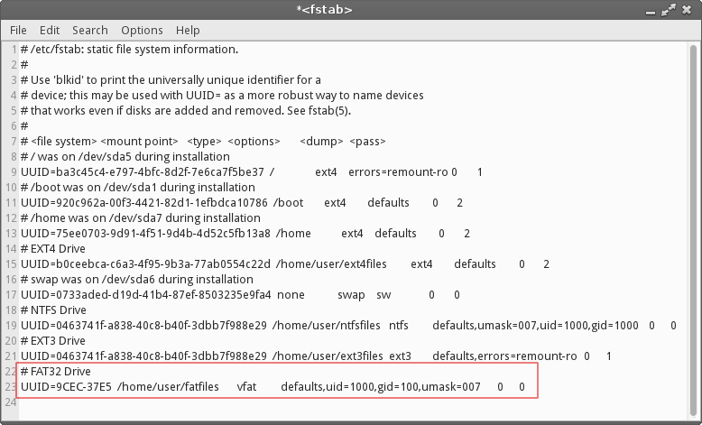
The first line (beginning with '#') is just a comment line describing what the second line does. The second line is what actually gets implemented.
Substitute your username (in all lowercase letters) where "user" is shown in the above example. Save the file. Open a terminal and type: sudo mount -a
If all went to plan, in /home/user/fatfiles you should see all of your files.
To add another User to Linux Lite, click on Menu,
Settings, User Manager.
The click on New user and enter a name, and the
same password twice.
NOTE: Choose a strong password, a mix of upper and lower case
as well as a mix of numbers and characters. An example of this would
be: y%9L2x#o would be considered a
strong password. Use a program like Keepassx to keep all your
passwords safely stored and NEVER use the same password for different
websites and accounts.
Never compromise your security for convenience.
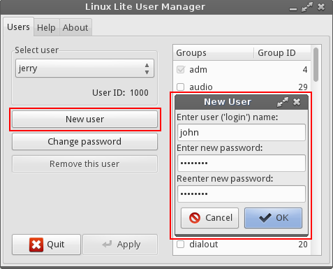
You will then be asked for your password, enter it and click on Ok to finish creating the new user account. The new user will have the same rights as the default user (you) except for Administrator rights meaning they will be unable to modify system settings such as installing software and changing system files.
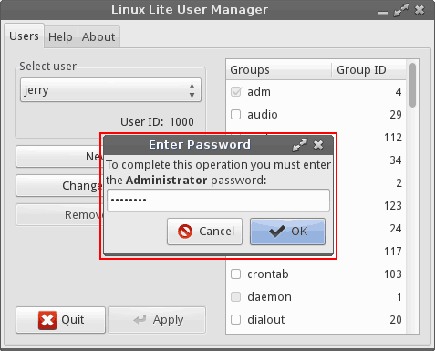
If you want your new user to have Administrator rights, in the right hand pane scroll down to sudo, place a tick in the box beside it and click on Apply. You can give the new user other group permissions to by using this method, but out of the box this should not be necessary as by default, the application already does all this for you. Now when the new user next logs in, they will have the same full system rights as you. You will both be 'Administrators'.
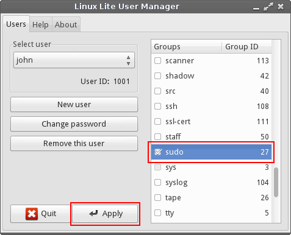
NB: Before removing a user account make sure their files are backed up to a usb device or the cloud first. Removing an account also removes all that persons documents, pictures, videos, files etc.
This is as easy as selecting the user that you want to remove from the Select user drop down box, clicking on Remove this user and clicking on Apply. If you are asked for your password, please enter it and then click Ok. Next a confirmation box will appear, read the message and if you want to proceed click on Yes. The user account and all their data has now been removed.
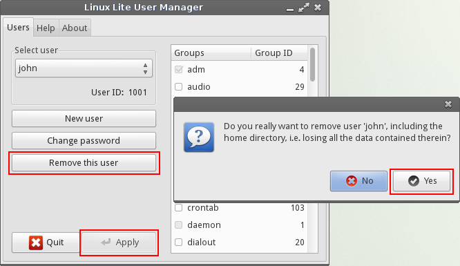
Forgot your password? It happens to all of us at some stage.
Fortunately setting it again is fairly straight forward.
Lets begin.
Boot up your computer and immediately press and hold down the Shift key. You should see a screen like this.

Next press the e key whilst that top line is highlighted.
This will take you to the next screen.
Use your arrow keys to move down to the line highlighted in the
picture below. Use the arrow key until you reach the end of that line.

Press the backspace key repeatedly until you remove: ro splash
quiet $vt_handoff and replace that
text with: rw init=/bin/bash so that it looks like the
picture below.

Now press either F10 or Ctrl+X to boot your machine to a command prompt.

At the prompt, type: passwd jerry where jerry is your username, then press enter.

You will be asked to type in a new password twice.

Your password has now been changed. Now we are ready to save those
changes, then reboot the computer.
Type in: sync then hit enter. Then type in: reboot -f

Your computer will reboot. If you see the screen shown below again, just hit enter. This is normal and won't appear the next time you reboot your computer. You may also not see the boot animation on this boot, this to is normal and will reappear next time you boot up.
Now login with your password.

Linux Lite is designed to be such that new users won't have to venture into the terminal to much. But, there will be some occasions where we need to run the odd terminal command. The following is a very basic introduction to some of the more common terminal commands that will help you to navigate around your computer, should you need to.
TIP: instead of typing out the entire name of a file or folder, type the first few letters and hit your TAB key, this will auto complete the name. This will save you lots of time but be careful and make sure you have typed the correct file name. In the examples below 'directory' also means 'folder'.
When you first open a terminal, your location in the file system will be your home directory. You can confirm that by using the first command listed below, "pwd". It will show that you are in "/home/username", where "username" is your actual username.
pwd - shows you the present working directory (the directory you are currently in). If you get lost, just type "pwd" and it will tell you where you are in the file system.
ls - display a list of files and directories in the current directory
ls -la - a more comprehensive listing that displays file properties in the current directory, including hidden files and their properties.
cd - change directory, change to another directory. For instance, if you are currently located at /home/username and want to go to your Documents folder, type: cd Documents. If you then type pwd, you will see that your location is now /home/username/Documents.
cd .. - go back one directory (up to parent directory of your current location).
cp - copy file to another directory
rm - remove a file or directory
rm -rf - permanently delete a file or directory
mv - rename a file or directory.
You can also use it to move a file from one location to another eg.
mv /home/jerry/file1.doc /home/jerry/Documents
cat - display the contents inside a file

mkdir - make a new folder
rmdir - remove a folder
killall - kill a program with that name
man - read the manual for a particular program (type q to exit the manual)


The default theme for Linux Lite is Mediterranean White. The
default icon set is Faenza.
There are some additional Theme and Icon sets in Linux Lite. Go to
Menu, Settings, Settings Manager.
There are 2 main areas in the Settings Manager that take care of
these settings - Appearance and Window Manager.
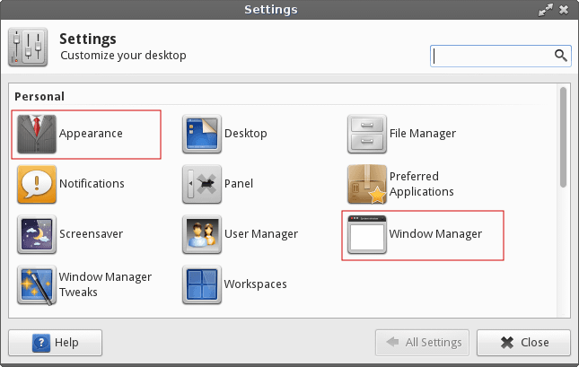
Click on Appearance. Here you will see the Style and Icons tab
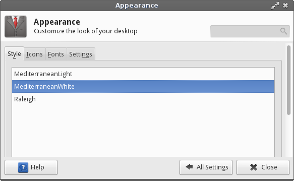
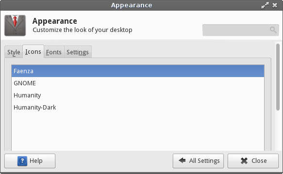
As you click through the various themes and icon sets you will
notice visual changes on your computer.
Close Settings Manager before moving onto the next part of
this tutorial.
This next section will show you how to apply new themes and icons.
Applying a new Theme
Head over to the XFCE Look website and choose theme of your liking.
NOTE: Not all themes from there will work as you would expect, please read all of the documentation before attempting to apply a new theme. Some make installation easy via a PPA, this is a preferable method to the one shown here. Click here for more information on how to install a new PPA. Whichever theme you choose, make sure that it mentions XFCE compatibility.
The first thing we need to do is open up our home folder. Click on
View, Show Hidden Files.
Right click somewhere in your home folder, Create Folder,
make a folder called .themes (you will only need to do this
once.) This is where we will copy the new theme to.
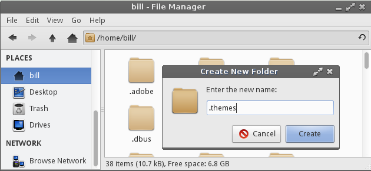
Download a theme of your choosing. In this example we will choose the Redbird theme.
NOTE: Each theme may come with a specific set of install instructions, if they do, please follow those instructions.
Next extract the theme you just downloaded (right click, Extract Here)
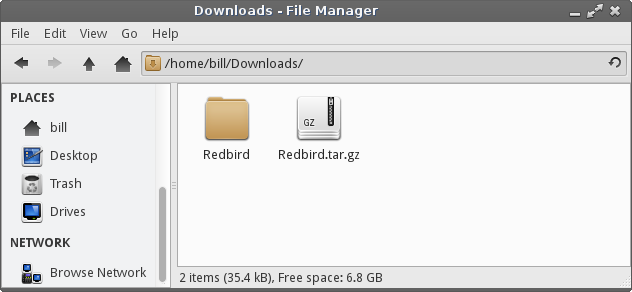
Copy the Redbird theme folder to the .themes folder in your home folder.
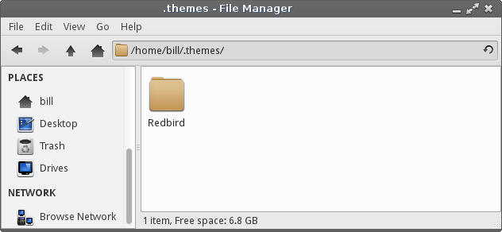
Now go to Menu, Settings, Settings Manager. There are 2 places we need to apply the new theme, Appearance and Window Manager.
First we'll click into Appearance. Select Redbird from the list.

Click on Overview in the bottom left to go back to the
Settings Manager.
Now click into Window Manager and select Redbird.
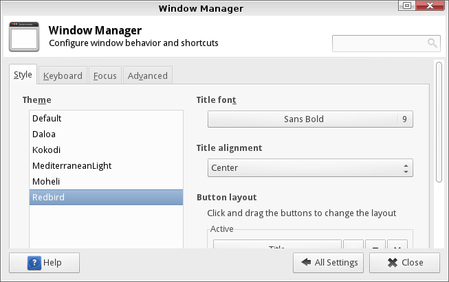
We're almost there. In the picture below you can see that it hasn't quite displayed our tray icons properly.
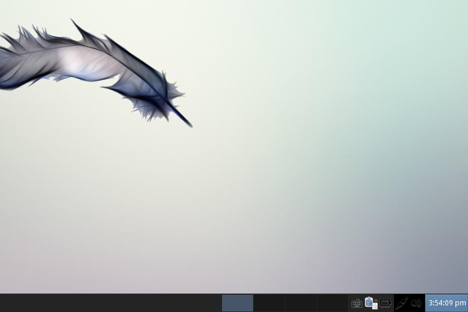
Lets click on Menu, Turn Off Computer, and Log Out.
Log in again and our new theme now displays properly.
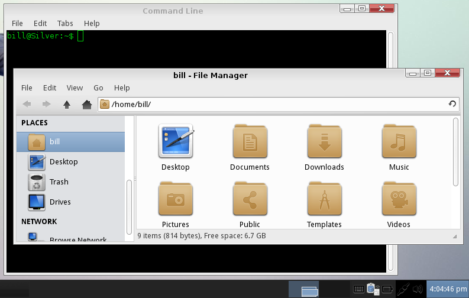
Applying a new Icon set
Head over to the Gnome Look website and choose an Icon set of your liking.
NOTE: Not all icon sets from there will work as you would
expect, please read all of the documentation before attempting to
apply a new icon set. Some make installation easy via a PPA, this is a
preferable method to the one shown here. Click
here
for more information on how to install a new PPA.
The first thing we need to do is open up our home folder. Click on
View, Show Hidden Files.
Right click somewhere in your home folder, Create Folder,
make a folder called .icons (you will only need to do this
once.) This is where we will copy the new Icon set to.
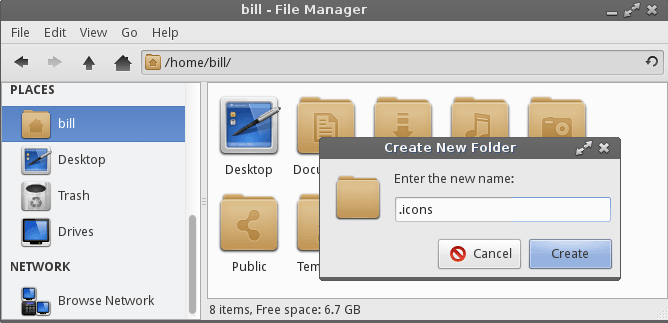
Download an icon set of your choosing. In this example we will choose the Black-Gnome Icon Set.
NOTE: Each icon set may come with a specific set of install instructions, if they do, please follow those instructions.
Next extract the icon set you just downloaded (right click, Extract Here)
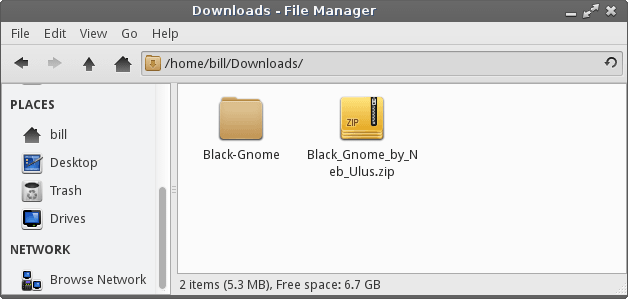
Copy the icon set folder to the .icons folder in your home folder.
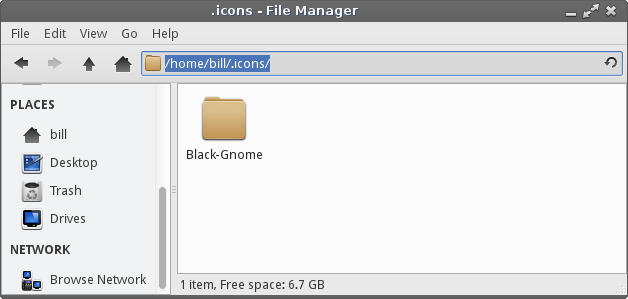
Now go to Menu, Settings, Appearance. Select the Icons tab and click on your new Icon set.
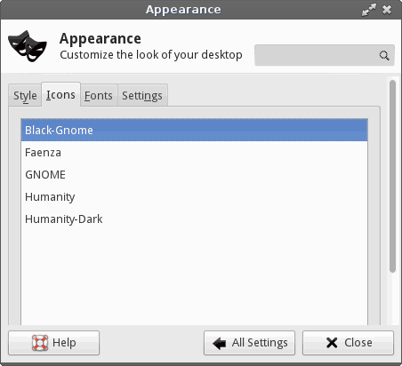
Here is a look at our new icon theme.
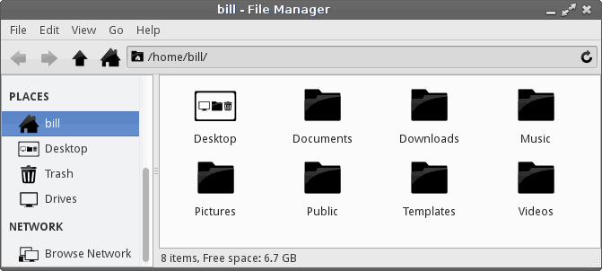
Open a terminal and do:
sudo apt-get install dmz-cursor-theme
This will install a standard mouse pointer theme that is scalable
on the fly.
Once installed go to, Menu, Settings, Mouse and Touchpad, click on
the Theme tab.
Select the DMZ theme (black or white, you choose) then adjust the
mouse pointer size to your liking, it will change when you click
Close.